Research Questions
What are the topics?
Part 1: Use LDA (Latent Dirichlet Allocation)How are they interrelated?
Part 2: Use CTM (Correlated Topic Model)What is the effect discipline (social sci. vs computing) & year has on the topics?
Part 3: Use STM (Structural Topic Model)
Part 1 (LDA)
Load the data
Let’s start by loading our packages and loading the dataset.
library(quanteda); library(tidyverse); library(RColorBrewer); library(quanteda.textplots)
dataset <- read_csv("https://raw.githubusercontent.com/manika-lamba/rladies-urmia/main/articles-sample.csv")
#create corpus
myCorpus <- corpus(dataset$Abstract)Create the dfm (pre-processing)
First, we need to create a dfm (document-feature matrix) and remove a standard list of English stop words.
We’ll also remove sparse terms using the trim
function.
dfm <- dfm(myCorpus,
remove = c(stopwords("english")),
ngrams=1L,
stem = F,
remove_numbers = TRUE,
remove_punct = TRUE,
remove_symbols = TRUE)
vdfm <- dfm_trim(dfm, min_count = 10, min_docfreq = 5)
# min_count = remove words used less than x
# min_docfreq = remove words used in less than x docsLet’s explore the top 50 words.
topfeatures(vdfm, n = 50)## use studi result model data effect
## 3190 2305 1738 1635 1554 1321
## can research develop provid student method
## 1305 1291 1262 1224 1178 1066
## network differ system approach signific examin
## 1014 1005 951 932 926 916
## analysi increas health find social paper
## 892 880 873 869 869 838
## group inform time base present relat
## 785 772 771 770 769 762
## design also measur associ activ propos
## 761 754 731 728 724 723
## user perform includ support import process
## 722 721 715 698 675 671
## relationship show particip suggest educ may
## 671 666 665 659 654 651
## level two
## 645 638Let’s plot two word clouds: one with the raw term frequencies and one with TF-IDF.
textplot_wordcloud(vdfm, scale=c(3.5, .75), colors=brewer.pal(8, "Dark2"),
random.order = F, rot.per=0.1, max.words=250, main = "Raw Counts")
textplot_wordcloud(dfm_tfidf(vdfm), scale=c(3.5, .75), colors=brewer.pal(8, "Dark2"),
random.order = F, rot.per=0.1, max.words=250, main = "TF-IDF")
Let’s now create a dendogram to get an idea of how the words are clustering.
numWords <- 50
wordDfm <- dfm_sort(dfm_weight(vdfm, scheme = 'count'))
wordDfm <- t(wordDfm)[1:numWords,] # keep the top numWords words
wordDistMat <- dist(wordDfm)
wordCluster <- hclust(wordDistMat)
plot(wordCluster, xlab="", main="TF-IDF Frequency weighting (First 50 Words)")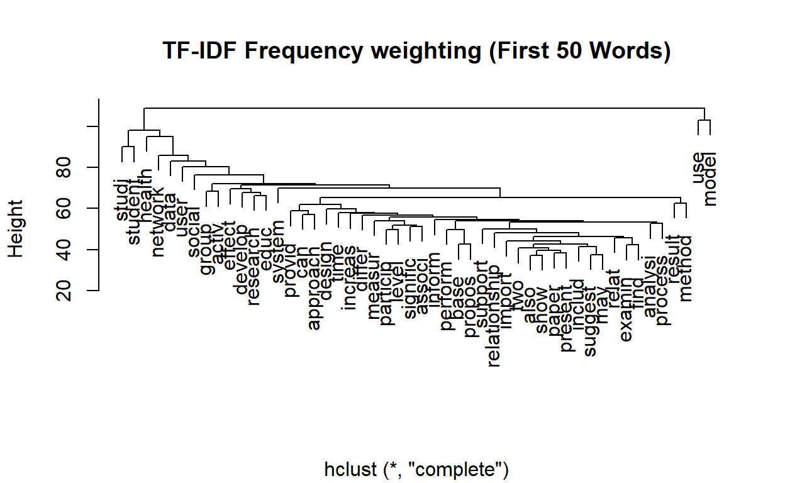
Topic Modeling (LDA)
For the first part, we’re going to use the topicmodels
package to run LDA.
We’re going to run Gibbs sampling which is a simulation based approach to LDA. There are multiple parameters we need to set.
The most important parameter is the number of topics. Usually, for your first time running topic modeling, there isn’t a perfect number to start with. This is ok! Usually starting with 10 (hundred of documents) to 50 (tens of thousands of documents). Let’s start with 20.
The second important parameter is the number of iterations. We’ll set this as 500.
library(topicmodels)
# we now export to a format that we can run the topic model with
dtm <- convert(vdfm, to="topicmodels")
# estimate LDA with K topics
K <- 20
lda <- LDA(dtm, k = K, method = "Gibbs",
control = list(verbose=25L, seed = 123, burnin = 100, iter = 500))## K = 20; V = 3787; M = 2879
## Sampling 600 iterations!
## Iteration 25 ...
## Iteration 50 ...
## Iteration 75 ...
## Iteration 100 ...
## Iteration 125 ...
## Iteration 150 ...
## Iteration 175 ...
## Iteration 200 ...
## Iteration 225 ...
## Iteration 250 ...
## Iteration 275 ...
## Iteration 300 ...
## Iteration 325 ...
## Iteration 350 ...
## Iteration 375 ...
## Iteration 400 ...
## Iteration 425 ...
## Iteration 450 ...
## Iteration 475 ...
## Iteration 500 ...
## Iteration 525 ...
## Iteration 550 ...
## Iteration 575 ...
## Iteration 600 ...
## Gibbs sampling completed!Visualizations Example: LDAVis
To explore our results, we’ll use a Shiny-based interactive visualization called LDAvis. This has been prebuilt as a R package (FYI it’s also available in Python).
In order to use it, we’ll need to convert our model results (in the
lda object) to a json object that LDAVis requires as its
input.
#Create Json for LDAVis
library(LDAvis)
topicmodels2LDAvis <- function(x, ...){
post <- topicmodels::posterior(x)
if (ncol(post[["topics"]]) < 3) stop("The model must contain > 2 topics")
mat <- x@wordassignments
LDAvis::createJSON(
phi = post[["terms"]],
theta = post[["topics"]],
vocab = colnames(post[["terms"]]),
doc.length = slam::row_sums(mat, na.rm = TRUE),
term.frequency = slam::col_sums(mat, na.rm = TRUE)
)
}
result <- LDA(dtm, 5)
serVis(topicmodels2LDAvis(result))Let’s view the topics.
term <- terms(lda, 10)
term## Topic 1 Topic 2 Topic 3 Topic 4 Topic 5 Topic 6
## [1,] "network" "activ" "effect" "area" "user" "health"
## [2,] "propos" "signific" "use" "urban" "system" "care"
## [3,] "secur" "physic" "design" "spatial" "approach" "american"
## [4,] "can" "increas" "studi" "region" "evalu" "examin"
## [5,] "paper" "p" "perform" "use" "applic" "age"
## [6,] "problem" "group" "result" "chang" "base" "need"
## [7,] "effici" "use" "three" "develop" "inform" "communiti"
## [8,] "node" "chang" "strategi" "land" "access" "servic"
## [9,] "rout" "level" "improv" "citi" "provid" "older"
## [10,] "requir" "result" "includ" "neighborhood" "can" "women"
## Topic 7 Topic 8 Topic 9 Topic 10 Topic 11 Topic 12
## [1,] "gene" "measur" "social" "one" "use" "research"
## [2,] "identifi" "test" "state" "use" "interact" "work"
## [3,] "structur" "control" "cultur" "make" "present" "support"
## [4,] "express" "group" "polici" "inform" "can" "organ"
## [5,] "sequenc" "assess" "public" "import" "technolog" "practic"
## [6,] "analysi" "score" "human" "two" "provid" "meet"
## [7,] "protein" "compar" "context" "decis" "environ" "provid"
## [8,] "cell" "valid" "way" "howev" "process" "develop"
## [9,] "genom" "p" "polit" "action" "understand" "discuss"
## [10,] "use" "ankl" "new" "first" "creat" "articl"
## Topic 13 Topic 14 Topic 15 Topic 16 Topic 17 Topic 18
## [1,] "data" "relat" "product" "studi" "imag" "method"
## [2,] "model" "behavior" "valu" "differ" "featur" "model"
## [3,] "analysi" "relationship" "firm" "examin" "method" "plan"
## [4,] "comput" "posit" "increas" "signific" "visual" "base"
## [5,] "time" "person" "find" "rate" "similar" "use"
## [6,] "problem" "influenc" "market" "find" "result" "estim"
## [7,] "system" "studi" "effect" "type" "cluster" "detect"
## [8,] "collect" "affect" "result" "level" "object" "track"
## [9,] "approach" "find" "impact" "factor" "learn" "can"
## [10,] "generat" "percept" "also" "higher" "algorithm" "object"
## Topic 19 Topic 20
## [1,] "patient" "student"
## [2,] "associ" "school"
## [3,] "risk" "educ"
## [4,] "children" "teacher"
## [5,] "use" "program"
## [6,] "year" "learn"
## [7,] "among" "instruct"
## [8,] "method" "practic"
## [9,] "treatment" "develop"
## [10,] "studi" "profession"Visualize the topics
library(tidytext)
library(tidyverse)
library(ggplot2)
topics <- tidy(lda, matrix = "beta")
top_terms <-
topics %>%
group_by(topic) %>%
top_n(5, beta) %>%
ungroup() %>%
arrange(topic, -beta)
top_terms %>%
mutate(term = reorder(term, beta)) %>%
ggplot(aes(term, beta, fill = factor(topic))) +
geom_col(show.legend = FALSE) +
facet_wrap(~ topic, scales = "free") +
theme_minimal() +
theme(plot.title = element_text(hjust = 0.5, size = 18)) +
labs(title = "LDA Result", caption= "Top Terms") +
ylab("") +
xlab("") +
coord_flip()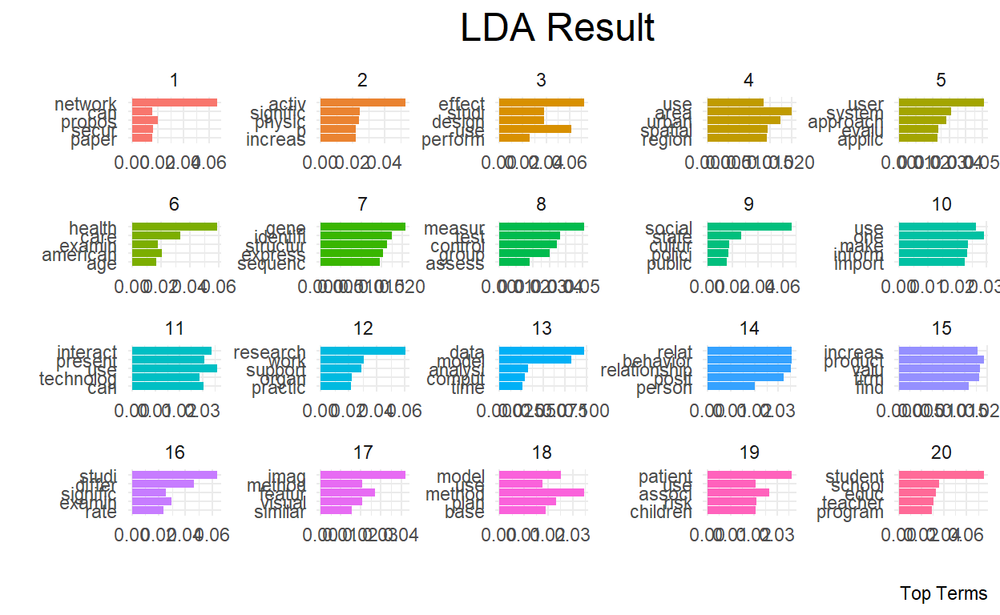
Like topics are probability distribution of words, in LDA documents are probability distributions of topics.
Accordingly, we can rank the documents (papers) by how much they rank for each topic. In other words,
First, let’s extract the document-topic probability matrix.
# to get topic probabilities per document
postlist <- posterior(lda)
probtopics <- data.frame(postlist$topics)
probtopics <- probtopics
colnames(probtopics) <- paste("Topic",1:K)Next, let’s find the most representative document for Topic 1.
filter.topic <- "Topic 1"
row <- order(-probtopics[,filter.topic])[1]
dataset$Abstract[row]## [1] "In this paper, we investigate how to design energy-efficient localized routing in a large-scale three-dimensional (3D) wireless network. Several 3D localized routing protocols were proposed to seek either energy efficiency or delivery guarantee in 3D wireless networks. However, recent results [1, 2] showed that there is no deterministic localized routing algorithm that guarantees either delivery of packets or energy efficiency of its routes in 3D networks. In this paper, we focus on design of a simple localized routing method which can provide energy efficiency with high probability in a randomly deployed 3D network. In particular, we extend our previous routing method designed for 2D networks [3] to 3D networks. The proposed 3D routing method is a simple variation of 3D greedy routing and can guarantee energy efficiency of its paths with high probability in random 3D networks. We also study its asymptotic critical transmission radius to ensure the packet delivery with high probability in random 3D networks. Simulation results confirm our theoretical results."Save docstotopics
lda.topics <- as.matrix(topics(lda))
write.csv(lda.topics,file=paste("docstotopics",K,"DocsToTopics.csv"))Save topictoterms
lda.terms <- as.matrix(terms(lda,5))
lda.terms[1:5,]## Topic 1 Topic 2 Topic 3 Topic 4 Topic 5 Topic 6 Topic 7
## [1,] "network" "activ" "effect" "area" "user" "health" "gene"
## [2,] "propos" "signific" "use" "urban" "system" "care" "identifi"
## [3,] "secur" "physic" "design" "spatial" "approach" "american" "structur"
## [4,] "can" "increas" "studi" "region" "evalu" "examin" "express"
## [5,] "paper" "p" "perform" "use" "applic" "age" "sequenc"
## Topic 8 Topic 9 Topic 10 Topic 11 Topic 12 Topic 13
## [1,] "measur" "social" "one" "use" "research" "data"
## [2,] "test" "state" "use" "interact" "work" "model"
## [3,] "control" "cultur" "make" "present" "support" "analysi"
## [4,] "group" "polici" "inform" "can" "organ" "comput"
## [5,] "assess" "public" "import" "technolog" "practic" "time"
## Topic 14 Topic 15 Topic 16 Topic 17 Topic 18 Topic 19
## [1,] "relat" "product" "studi" "imag" "method" "patient"
## [2,] "behavior" "valu" "differ" "featur" "model" "associ"
## [3,] "relationship" "firm" "examin" "method" "plan" "risk"
## [4,] "posit" "increas" "signific" "visual" "base" "children"
## [5,] "person" "find" "rate" "similar" "use" "use"
## Topic 20
## [1,] "student"
## [2,] "school"
## [3,] "educ"
## [4,] "teacher"
## [5,] "program"write.csv(lda.terms,file=paste("topicstoterms",K,"TopicsToTerms.csv"))Part 2 (CTM)
Load the data
Let’s reload our packages and dataset (no need to reload if you have it saved from part 1).
Create the dfm (pre-processing)
This time, let’s remove a pre-created list of “generic” words to our original stop list. These are words that are research terms that do not tell much about the subject itself.
library("quanteda.textstats")
stopWords <- c("can","use","uses","used","using","study","studies","first","second","third","also","across","results","result","resulted","may","however","one","two","three","four","five","among","well","within","many","related","i.e","e.g","find","finding","finds","found","increase","increases","increasing","increased","decreased","decrease","decreases","decreasing","propose","proposal","proposals","proposes","proposed","new","old","differ","differs","different","difference","differences","positive","negative","findings","reports","report","reported","state","states","article","articles","examines","examine","suggest","research","researches","researchers","need","needs","show","shows","association","associations","associated","discuss","discusses","discussed","will","likely","unlikely","paper","method","methods","methodology","compared","specifically","approach","impact","impacts","examine","examined","examines","includes","include","included","including","measure","measures","measured","analysis","analyze","analyses","complete","completes","completed","indicate","indicated","indicates","high","higher","low","lower","follow","follows","following","significant","significance","approach","approaches","approached","model","models","demonstrate","demonstrated","demonstrates","yet","best","worst","better","large","small","larger","smaller","several","few","much","less","given","via","long","short","often","years","along","whether","potential","significantly","influence","influenced","influences","develop","develops","developed","good","bad","based","p","group","groups","effect","affect","affects","effects","sample","samples","relationship","relationships","change","changes","m","k","conclusion","conclusions","present","presents")
dfm <- dfm(myCorpus,
remove = c(stopwords("english"), stopWords),
ngrams= 1L,
stem = F,
remove_numbers = TRUE,
remove_punct = TRUE,
remove_symbols = TRUE)
vdfm <- dfm_trim(dfm, min_count = 10, min_docfreq = 5)
# min_count = remove words used less than x
# min_docfreq = remove words used in less than x docsLet’s explore the top 50 words.
topfeatures(vdfm, n = 50)## data provid student network system health social inform
## 1554 1224 1178 1014 951 873 869 772
## time design activ user perform develop support import
## 771 761 724 722 721 708 698 675
## process particip educ level control patient evalu experi
## 671 665 654 645 630 625 618 615
## imag problem test practic factor effect learn set
## 607 605 602 596 590 586 575 574
## identifi work school interact program structur rate improv
## 564 563 557 550 537 533 527 524
## assess individu behavior manag care comput object teacher
## 523 521 510 509 503 496 484 483
## age communiti
## 482 478Let’s plot two word clouds: one with the raw term frequencies and one with TF-IDF.
textplot_wordcloud(vdfm, scale=c(3.5, .75), colors=brewer.pal(8, "Dark2"),
random.order = F, rot.per=0.1, max.words=250, main = "Raw Counts")
textplot_wordcloud(dfm_tfidf(vdfm), scale=c(3.5, .75), colors=brewer.pal(8, "Dark2"),
random.order = F, rot.per=0.1, max.words=250, main = "TF-IDF")
Correlated Topic Model (CTM) with stm package
For this part (and the next), we’re going to use the stm
package.
library(stm)
# use quanteda converter to convert our Dfm
stmdfm <- convert(dfm, to = "stm")Unlike the topicmodels packages, stm has
built in features to help analysts reduce sparse terms (minDoc or
minCount).
plotRemoved(stmdfm$documents, lower.thresh = seq(1, 100, by = 10))
out <- prepDocuments(stmdfm$documents, stmdfm$vocab, stmdfm$meta, lower.thresh = 5)## Removing 13662 of 16975 terms (21501 of 169976 tokens) due to frequency
## Your corpus now has 2879 documents, 3313 terms and 148475 tokens.This time, let’s consider running a 40 topic model. The code simply loads the file. You can run the model (which will take several minutes) by uncommenting out the code.
k <- 40
load(file = "./ctmfit.RData")
#ctmFit <- stm(out$documents, out$vocab, K = k,
# max.em.its = 150, data = out$meta, init.type #= "Spectral", seed = 300)
#save(ctmFit, file = "./ctmfit.RData")Exploring the results through stm’s
visualizations
Let’s explore the topics.
plot(ctmFit,
type = "summary",
xlim = c(0,.16),
n = 5,
labeltype = "prob",
main = "UNCC Research Topics",
text.cex = 0.8)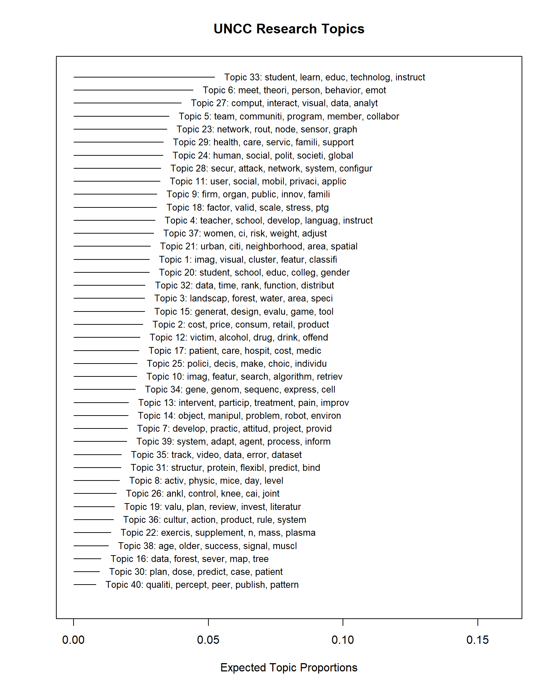
There are a lot of static visualizations we can explore. We’ll use
the plot.STM function.
This function provides four different types of plots. Each can be
selected using its name for the type parameter.
The four plots are:
summary- plots topic proportions and names.labels- plots the top words for a specific topic.perspectives- compares two topics’ words.hist- a histogram of the expected topic proportions across documents for a topic.
Let’s examine one of the topics to interpret its meaning. Let’s
consider topic 25 using the labels type.
plot(ctmFit, # model results
type = "labels", # type of plot
labeltype="prob", # label type for the words
n = 30, # number of words to show
topics = 25, # the topic we've selected
text.cex = 1.2, # this increases the font by 20% (1.2 = 120%)
width = 50) # this increases the width of the box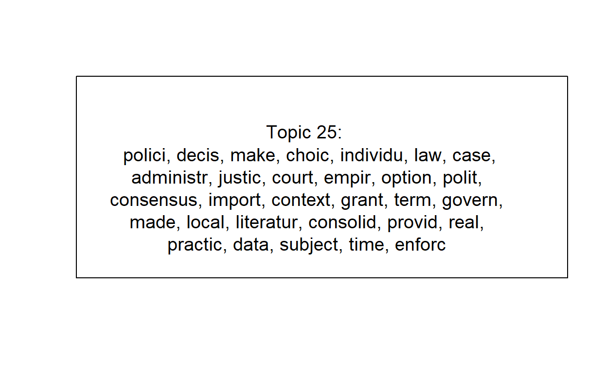
This is clearly Education topics. But if we look back at the summary, there’s also topic 26 with related terms.
We can alternatively use a different weighting scheme to focus on the words that are most distinctive for each topic.
For this, we’ll use the frex labeltype. FREX stands for
frequent-exclusive words, thus indicating words that
are frequently used but exclusive to the topic.
plot(ctmFit,
type = "labels",
labeltype="frex",
n = 30,
topics = 25,
text.cex = 1.2,
width = 50)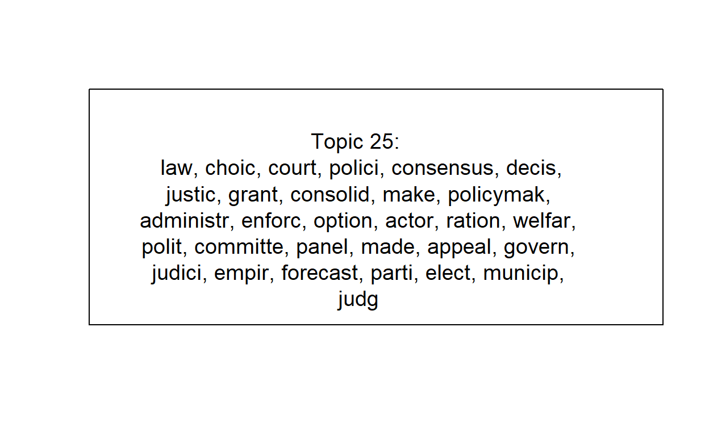
Or we can use the “lift”…
plot(ctmFit,
type = "labels",
labeltype="lift",
n = 30,
topics = 25,
text.cex = 1.2,
width = 50)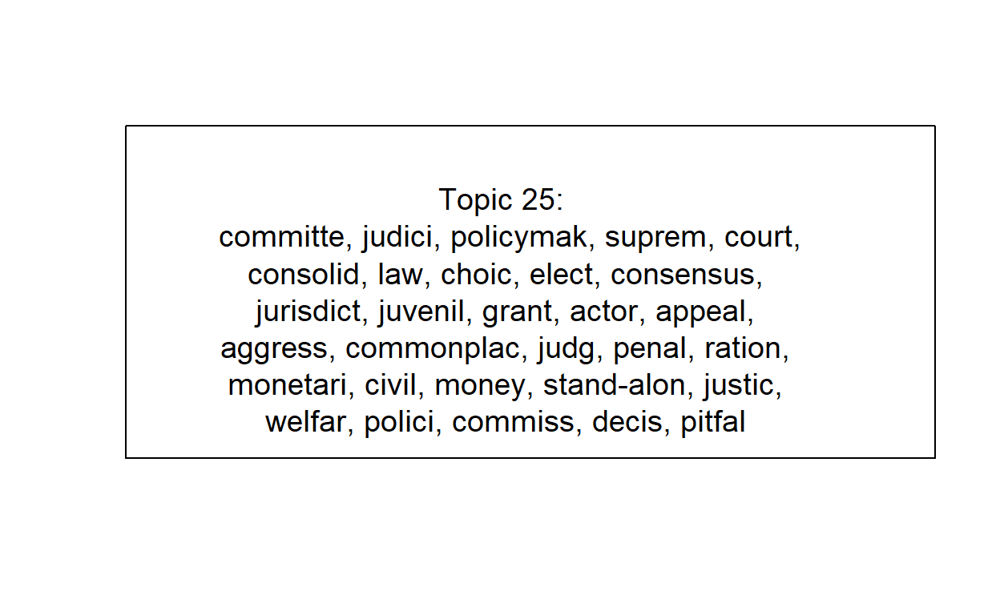
There isn’t a “correct” approach. Each offers a unique perspective and knowing each one can help your full interpretation of a topic.
topicNames <- labelTopics(ctmFit, n = 5)
topic <- data.frame(
TopicNumber = 1:k,
TopicProportions = colMeans(ctmFit$theta))Visualizations Example: Correlated Topic Model
Let’s create a network correlation plot. We’ll use a static network first.
library(igraph); library(visNetwork)
mod.out.corr <- topicCorr(ctmFit, cutoff = .01)
plot(mod.out.corr)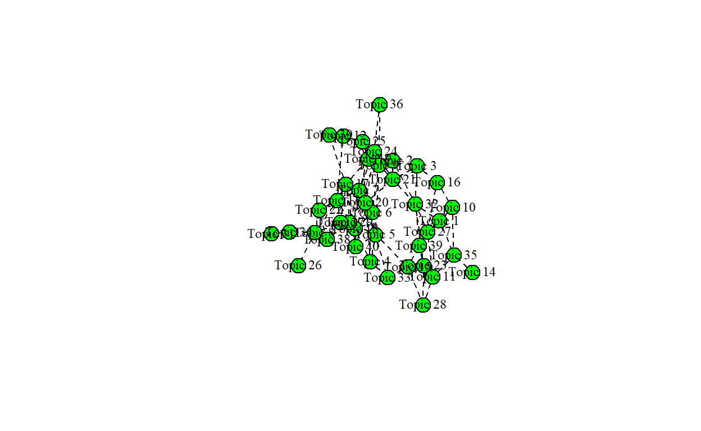
This is a start but let’s create a better, interactive network using
the visNetwork package.
To create that network, we’ll need to format the data for that package by creating two data frames: nodes and edges.
# output links and simplify
links2 <- as.matrix(mod.out.corr$posadj)
net2 <- graph_from_adjacency_matrix(links2, mode = "undirected")
net2 <- igraph::simplify(net2)
# create the links and nodes
links <- igraph::as_data_frame(net2, what="edges")
nodes <- igraph::as_data_frame(net2, what="vertices")
# set parameters for the network
nodes$shape <- "dot"
nodes$title <- paste0("Topic ", topic$TopicNumber)
nodes$label <- apply(topicNames$prob, 1, function(x) paste0(x, collapse = " \n ")) # Node label
nodes$size <- (topic$TopicProportions / max(topic$TopicProportions)) * 30
nodes$font <- "18px"
nodes$id <- as.numeric(1:k)
visNetwork(nodes, links, width="100%", height="800px", main="UNCC Research Topics") %>%
visOptions(highlightNearest = list(enabled = TRUE, algorithm = "hierarchical")) %>%
visNodes(scaling = list(max = 60)) %>%
visIgraphLayout(smooth = T) %>%
visInteraction(navigationButtons = T)Knowing this, let’s use the perspectives type to examine
two topics.
For example, let’s consider health care topics.
Let’s look at topic 30 (“patients”) and topic 11 (“health, care, older”).
plot(ctmFit,
type = "perspectives",
labeltype="prob",
n = 30,
topics = c(30, 11),
text.cex = 0.8)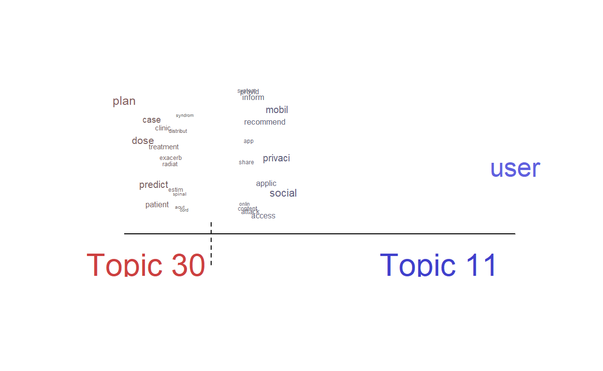
This shows the distinctive words versus the “shared” words.
Let’s now consider how the plot looks for two topics that are not similar (i.e. do not share an edge).
We’ll choose Topic 25 (“alcohol, drugs”) and Topic 32 (“genetics”)
plot(ctmFit,
type = "perspectives",
labeltype="prob",
n = 30,
topics = c(25, 32),
text.cex = 0.8)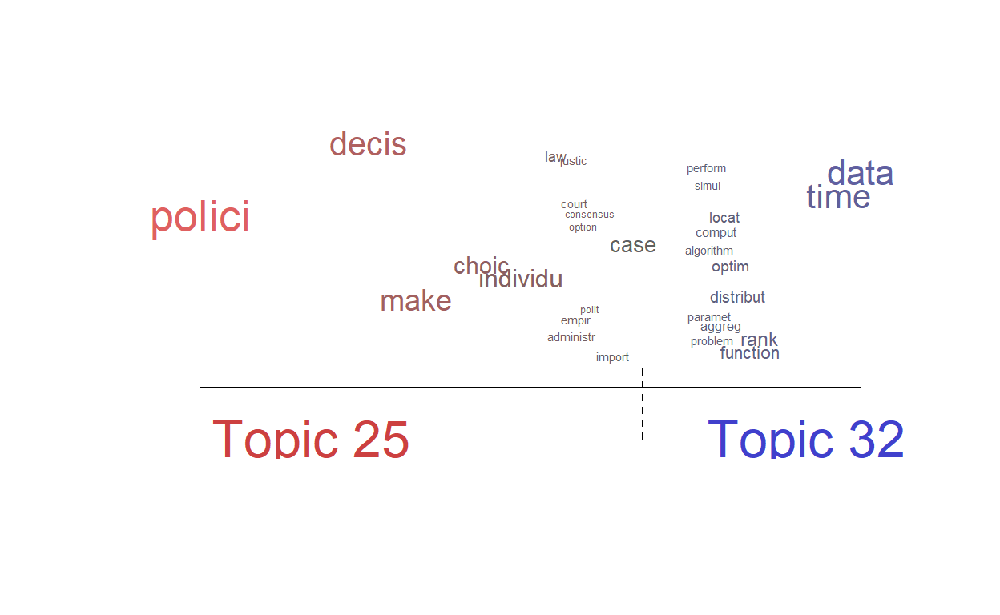
What’s interesting is that the only shared word is “data”, which is shared by a lot of topics. Recall – it was the most prevalent word in the corpus.
Semantic Coherence & Exclusivity
A quick view is that there are two ways of measuring topic “interpretability”: Semantic Coherence and Exclusivity.
Semantic coherence measures the consistency of the words used within the topic. Larger values are better and mean the topic is more consistent. Low values sometimes imply the topic may be composed of sub-topics.
Exclusivity measures how distinctive the top words are to that topic. For this, larger or smaller is not necessary better or worse, but indicates whether the topic is unique (high value) or broad (low value).
Let’s plot this using the topicQuality function.
topicQuality(ctmFit, out$documents)## [1] -92.41479 -107.67684 -88.44682 -91.85185 -83.92817 -105.99933
## [7] -114.74823 -146.13330 -110.39519 -85.13465 -105.37255 -131.92169
## [13] -93.70184 -119.06033 -97.20186 -145.60405 -115.28449 -112.41323
## [19] -156.72703 -96.39655 -92.20963 -115.21807 -95.09244 -125.87693
## [25] -140.72678 -119.37446 -85.46070 -85.62510 -97.98590 -126.89315
## [31] -115.03251 -117.76735 -80.26802 -101.94768 -122.71983 -119.36771
## [37] -85.15481 -126.61498 -139.75354 -165.17198
## [1] 9.891367 9.893273 9.757869 9.935071 9.869311 9.879823 9.788510 9.875835
## [9] 9.872405 9.752688 9.822799 9.845527 9.854328 9.855343 9.859240 9.884459
## [17] 9.839593 9.860232 9.946346 9.926610 9.859171 9.870145 9.809486 9.784943
## [25] 9.865181 9.883887 9.771241 9.778077 9.828670 9.872509 9.849202 9.718598
## [33] 9.906965 9.695825 9.837974 9.687017 9.855441 9.828882 9.892345 9.935393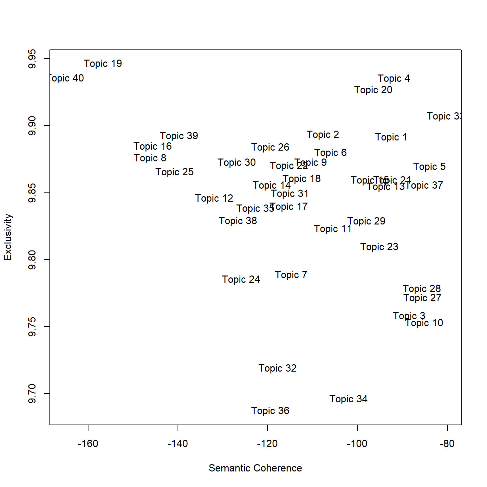
Part 3 (STM)
Load the data
Let’s reload our packages and dataset (no need to reload if you have it saved from part 1).
#create corpus
myCorpus <- corpus(dataset$Abstract)
docvars(myCorpus, field = "Subject") <- ifelse(dataset$College=="Computing and Informatics",
"Computing","Social Science")
docvars(myCorpus, field = "Year") <- as.integer(dataset$Year)Create the dfm (pre-processing)
stopWords <- c("can","use","uses","used","using","study","studies","first","second","third","also","across","results","result","resulted","may","however","one","two","three","four","five","among","well","within","many","related","i.e","e.g","find","finding","finds","found","increase","increases","increasing","increased","decreased","decrease","decreases","decreasing","propose","proposal","proposals","proposes","proposed","new","old","differ","differs","different","difference","differences","positive","negative","findings","reports","report","reported","state","states","article","articles","examines","examine","suggest","research","researches","researchers","need","needs","show","shows","association","associations","associated","discuss","discusses","discussed","will","likely","unlikely","paper","method","methods","methodology","compared","specifically","approach","impact","impacts","examine","examined","examines","includes","include","included","including","measure","measures","measured","analysis","analyze","analyses","complete","completes","completed","indicate","indicated","indicates","high","higher","low","lower","follow","follows","following","significant","significance","approach","approaches","approached","model","models","demonstrate","demonstrated","demonstrates","yet","best","worst","better","large","small","larger","smaller","several","few","much","less","given","via","long","short","often","years","along","whether","potential","significantly","influence","influenced","influences","develop","develops","developed","good","bad","based","p","group","groups","effect","affect","affects","effects","sample","samples","relationship","relationships","change","changes","m","k","conclusion","conclusions","present","presents")
dfm <- dfm(myCorpus,
remove = c(stopwords("english"), stopWords),
ngrams= 1L,
stem = F,
remove_numbers = TRUE,
remove_punct = TRUE,
remove_symbols = TRUE)Structural Topic Model: Subject and Year
For this part, we’re going to use the stm package to
introduce two covariates into our model: field (Computing or Social
Science) and year.
library(stm)
# use quanteda converter to convert our Dfm
stmdfm <- convert(dfm, to = "stm", docvars = docvars(myCorpus))Unlike the topicmodels packages, stm has
built in features to help analysts reduce sparse terms (minDoc or
minCount).
plotRemoved(stmdfm$documents, lower.thresh = seq(1, 100, by = 10))
out <- prepDocuments(stmdfm$documents, stmdfm$vocab, stmdfm$meta, lower.thresh = 5)## Removing 13662 of 16975 terms (21501 of 169976 tokens) due to frequency
## Your corpus now has 2879 documents, 3313 terms and 148475 tokens.Let’s run a 40 topic model. The code simply loads the file. You can run the model (which will take several minutes) by uncommenting out the code.
k <- 40
load("./stmFit.RData")
#stmFit <- stm(out$documents, out$vocab, K = k, prevalence =~ s(Year) + Subject,
# max.em.its = 150, data = out$meta, init.type = "Spectral", seed = 300)
#save(stmFit, file = "./stmFit.RData")Let’s explore the topics.
plot(stmFit,
type = "summary",
xlim = c(0,.16),
n = 5,
labeltype = "prob",
main = "UNCC Research Topics",
text.cex = 0.8)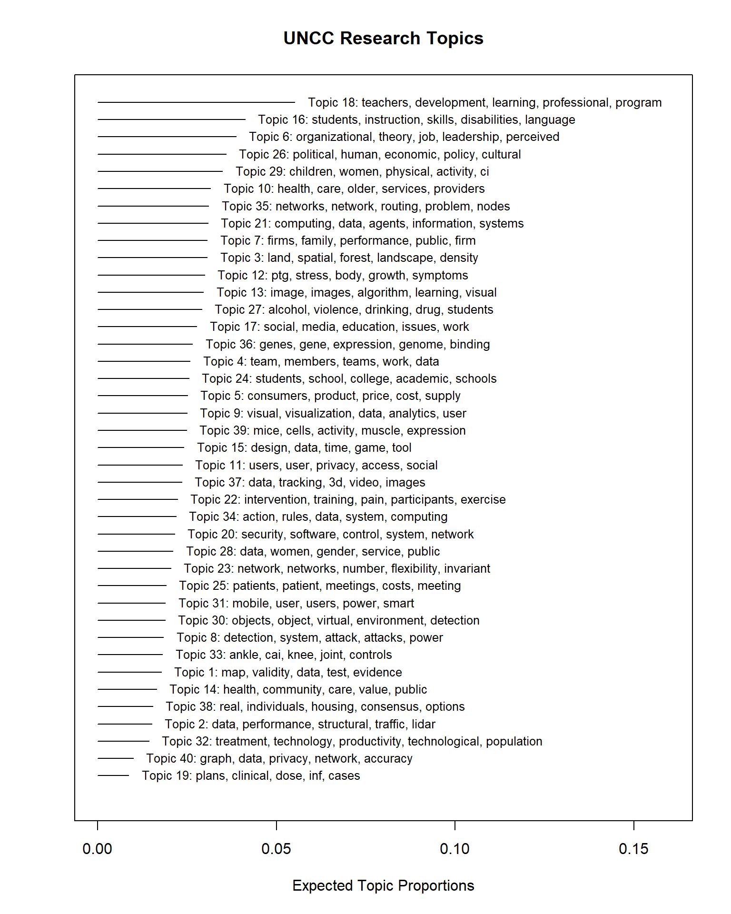
We can see almost identical topics – this is a good sign. Our topics are “stable” across runs, even in this case after we added in two prevalent covariates (Year and Subject).
Let’s save our topic information.
topicNames <- labelTopics(stmFit, n = 5)
topic <- data.frame(
TopicNumber = 1:k,
TopicProportions = colMeans(stmFit$theta))Exploring the effects of the covariates: Subject
Next, we want to explore the effect of the covariates on the topic proportions.
First, we’ll need to use the estimateEffect function to
estimate this effect.
prep <- estimateEffect(1:40 ~ Subject + s(Year), stmFit, meta = out$meta, uncertainty = "Global")We can then use the plot.estimateEffect function to
compare the effect of the “Subject” field (Computing or Social Science
binary flag) on topic proportions (likelihood of the topic).
Result <- plot(
prep,
"Subject",
method = "difference",
cov.value1 = "Social Science",
cov.value2 = "Computing",
verbose.labels = F,
ylab = "Expected Difference in Topic Probability by Subject (with 95% CI)",
xlab = "More Likely Computing Not Significant More Likely Social Science",
main = "Effect of Subject on Topic Prevelance for UNCC Research",
xlim = c(-0.1, 0.1)
)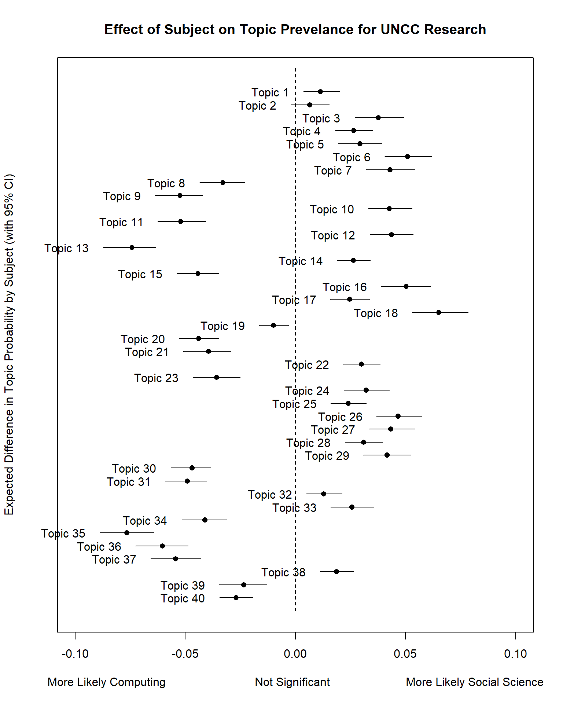
Let’s redo this plot but rank the topics.
# order based on Expected Topic Proportion
rank = order(unlist(Result$means))
topicRnk <- topic[rank, ]
plot(
prep,
"Subject",
method = "difference",
cov.value1 = "Social Science",
cov.value2 = "Computing",
verbose.labels = F,
topics = topicRnk$TopicNumber,
#labeltype = "custom",
#custom.labels = apply(topicNames$prob, 1, function(x) paste0(x, collapse = " + ")),
ylab = "Expected Difference in Topic Probability by Subject (with 95% CI)",
xlab = "More Likely Computing Not Significant More Likely Social Science",
main = "Effect of Subject on Topic Prevelance for UNCC Research",
xlim = c(-0.1, 0.1)
)
Effect of Time
# time
par(mfrow = c(1, 1), mar = c(4, 4, 2, 2))
i <- c(9, 18)
plot(
prep,
"Year",
method = "continuous",
topics = i,
main = "Topics 9 and 18 by Year",
printlegend = T,
ylab = "Exp. Topic Prob",
xlab = "Year",
ylim = c(-0.01, 0.16)
)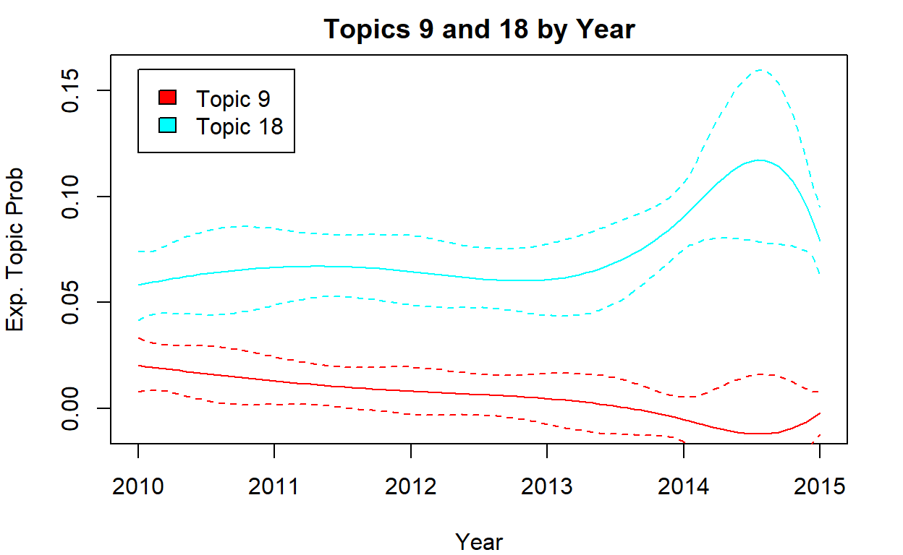
Session Info
sessionInfo()## R version 4.1.3 (2022-03-10)
## Platform: x86_64-w64-mingw32/x64 (64-bit)
## Running under: Windows 10 x64 (build 22000)
##
## Matrix products: default
##
## locale:
## [1] LC_COLLATE=English_United States.1252
## [2] LC_CTYPE=English_United States.1252
## [3] LC_MONETARY=English_United States.1252
## [4] LC_NUMERIC=C
## [5] LC_TIME=English_United States.1252
##
## attached base packages:
## [1] stats graphics grDevices utils datasets methods base
##
## other attached packages:
## [1] visNetwork_2.1.0 igraph_1.2.11
## [3] stm_1.3.6 quanteda.textstats_0.95
## [5] tidytext_0.3.2 LDAvis_0.3.2
## [7] topicmodels_0.2-12 quanteda.textplots_0.94.1
## [9] RColorBrewer_1.1-2 forcats_0.5.1
## [11] stringr_1.4.0 dplyr_1.0.8
## [13] purrr_0.3.4 readr_2.1.2
## [15] tidyr_1.2.0 tibble_3.1.6
## [17] ggplot2_3.3.5 tidyverse_1.3.1
## [19] quanteda_3.2.1 shiny_1.7.1
##
## loaded via a namespace (and not attached):
## [1] colorspace_2.0-3 ellipsis_0.3.2 ISOcodes_2022.01.10
## [4] modeltools_0.2-23 rprojroot_2.0.2 markdown_1.1
## [7] fs_1.5.2 rstudioapi_0.13 proxy_0.4-26
## [10] farver_2.1.0 SnowballC_0.7.0 bit64_4.0.5
## [13] fansi_1.0.2 lubridate_1.8.0 xml2_1.3.3
## [16] splines_4.1.3 knitr_1.38 jsonlite_1.8.0
## [19] broom_0.7.12 servr_0.24 dbplyr_2.1.1
## [22] compiler_4.1.3 httr_1.4.2 backports_1.4.1
## [25] assertthat_0.2.1 Matrix_1.4-0 fastmap_1.1.0
## [28] cli_3.2.0 later_1.3.0 htmltools_0.5.2
## [31] tools_4.1.3 NLP_0.2-1 gtable_0.3.0
## [34] glue_1.6.2 reshape2_1.4.4 fastmatch_1.1-3
## [37] Rcpp_1.0.8.3 slam_0.1-50 cellranger_1.1.0
## [40] jquerylib_0.1.4 vctrs_0.3.8 RJSONIO_1.3-1.6
## [43] xfun_0.30 stopwords_2.3 rvest_1.0.2
## [46] nsyllable_1.0.1 mime_0.12 lifecycle_1.0.1
## [49] scales_1.1.1 vroom_1.5.7 hms_1.1.1
## [52] promises_1.2.0.1 parallel_4.1.3 yaml_2.3.5
## [55] curl_4.3.2 sass_0.4.1 stringi_1.7.6
## [58] highr_0.9 tokenizers_0.2.1 matrixStats_0.61.0
## [61] rlang_1.0.2 pkgconfig_2.0.3 evaluate_0.15
## [64] lattice_0.20-45 htmlwidgets_1.5.4 labeling_0.4.2
## [67] bit_4.0.4 tidyselect_1.1.2 plyr_1.8.6
## [70] magrittr_2.0.2 learnr_0.10.1 R6_2.5.1
## [73] generics_0.1.2 DBI_1.1.2 pillar_1.7.0
## [76] haven_2.4.3 withr_2.5.0 janeaustenr_0.1.5
## [79] modelr_0.1.8 crayon_1.5.1 utf8_1.2.2
## [82] tzdb_0.2.0 rmarkdown_2.13 grid_4.1.3
## [85] readxl_1.3.1 data.table_1.14.2 reprex_2.0.1
## [88] digest_0.6.29 xtable_1.8-4 tm_0.7-8
## [91] httpuv_1.6.5 RcppParallel_5.1.5 stats4_4.1.3
## [94] munsell_0.5.0 bslib_0.3.1Excercise
data <- read.csv("https://raw.githubusercontent.com/textmining-infopros/chapter4/master/4c_dataset.csv")